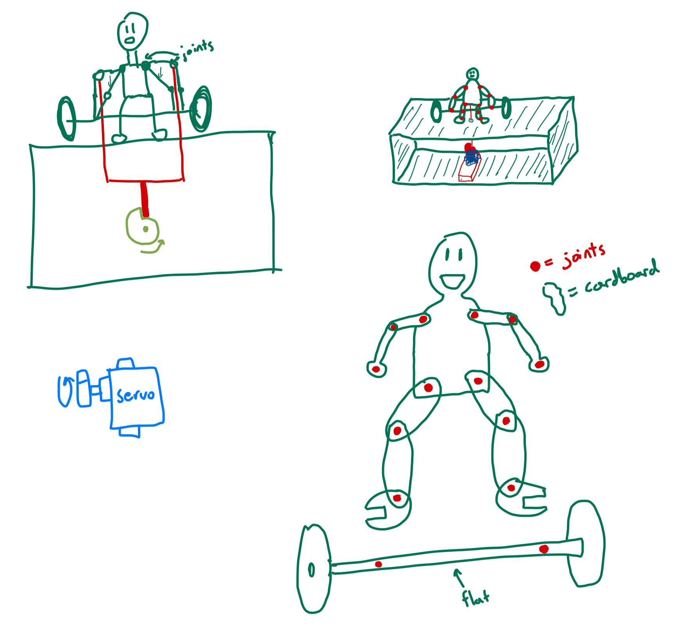

<div class="textcontainer">
<p class="margin"> </p>
<h3>Week 3: Hand Tools and Fabrication</h3>
<h4><b>Kinetic Sculpture: The Deadlifter</b></h4>
<p></p>
Initially, I was inspired to use a Geneva Drive to create some kind of kinetic sculpture that translated continuous rotational movement into periodic
movement. After exploring how the mechanism is used in a lot of modern-day applications (industrial machines, projectors, and <b>watches</b>), I
finally settled on using it to create some kind of display that uses the vertical movement created by the drive. Here is a drawing I made of the
Geneva mechanism that I had in mind:
<p></p>
<div class="flexrow"><img src="geneva_drawing.jpeg" alt="geneva_drawing" style="width:30%" border="3px"></div>
<p></p>
Choosing what to actually put on display had me scratching my head. After cycling through a lot of random thoughts, one came to the surface...Almost 2 years ago,
I injured my back deadlifting at the gym and have since never picked up the barbell in deadlift form. My thought for this project was, maybe I could
use the vertical motion to create a mechanism to show correct(ish) form for deadlifting! After some more thought about the complexity of correct form
for the deadlift and how it would be difficult to get it exactly right, I decided to settle for semi-correct form (so, don't use this project in place of
a good personal trainer!).
<p></p>
After more deliberation, I realized that the movement of a deadlift doesn't really follow a timed toggle like the Geneva drive creates. It's more of a
slow pull upwards followed by a release at the top of the lift. A more suitable mechanism for this movement would be the little snail-shaped wheel that
we used in building automata in Lab. Here are some drawings from my rough design sketches:
<p></p>
<div class="flexrow"></div>
<p></p>
The first iteration of the box, deadlifter, and barbell is shown below:<p></p>
<div class="flexrow"><img src="deadlifter_1.png" alt="deadlifter fusion" style="width:100%" border="3px"></div>
<p></p>
The initial design revealed some challenges that I didn't anticipate. First, I faced some trouble sizing the parameters to reasonable dimensions, ensuring
that all the pieces fit well together. This challenge was enhanced because of the high number of pieces that this project includes. I expect that
the pieces won't initially fit well together, and that I'll have to make some small adjustments. This obstacle also doesn't even include the mechanism
inside the box (the snail-shaped wheel attached to the servo motor), which will inevitably also introduce a compatibility challenge.
</div>